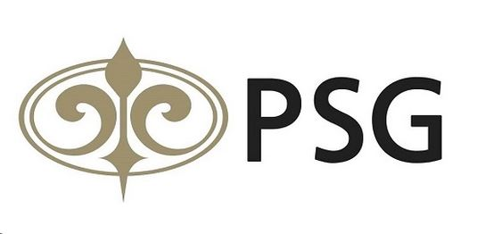
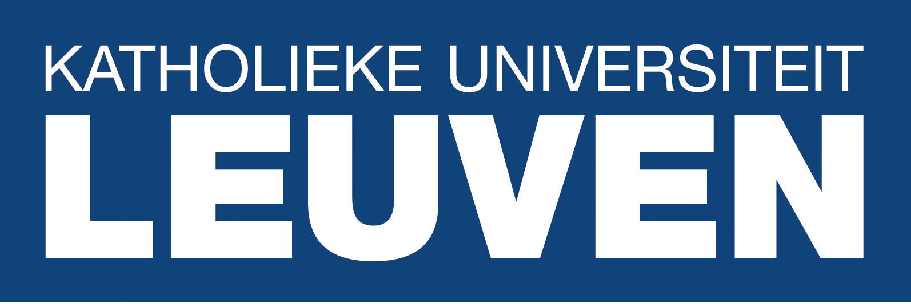
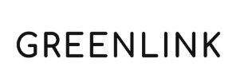

-
Jan 2023 - Jul 2023
PSG Head Consultants

Collaborated with a team of engineers and professionals to provide engineering
solutions and consultancy services. Participated in project planning, design, and implementation
activities under the guidance of senior engineers. Conducted research, data analysis, and
simulations to support engineering projects and decision-making processes. Assisted in the
preparation of technical reports, proposals, and presentations. Stayed updated with industry trends,
technologies, and best practices to contribute to continuous improvement initiatives. Contributed to
team meetings and discussions, sharing insights and ideas for enhancing project outcomes.
-
Oct 2022 - Dec 2022
KU Leuven

Visiting scholar at the Faculty of Engineering Science, where I helped the research
team develop their FPGA program to accelerate their CasADi software.
-
Jan 2021 - Oct 2022
Cloud line
Participated in airship testing activities, including flight tests and system
performance evaluations. Assisted in the setup and calibration of testing equipment and
instrumentation. Conducted data collection and analysis during airship flights, ensuring accurate
and reliable measurements. Collaborated with engineers and technicians to troubleshoot any issues
encountered during testing.
-
Jun 2021 - Dec 2021
Green Link Solutions

Designed and developed sensors and sensor systems for specific applications focusing
on PCB design and embedded systems. Prototyped and tested sensor designs, analyzed data, and
provided recommendations for improvement.
-
Apr 2021 - Dec 2021
Enerdyne
Contributed to the prototyping and development of products, focusing on OpenGL and
mainframe development. Collaborated with product managers, engineers, and designers to translate
requirements into functional product prototypes. Developed and implemented software components using
OpenGL for enhanced graphical rendering. Contributed to mainframe development for efficient data
processing and system integration. Conducted thorough testing and validation of prototypes, ensuring
adherence to quality standards. Collaborated with cross-functional teams to identify areas for
product optimization and improvement. Assisted in the preparation of technical documentation,
including user manuals and release notes.
-
June 2019 - Dec 2019
Hexabyte
Assisted in the development and implementation of software solutions. Participated in
software design and coding activities under the guidance of senior developers. Conducted testing and
debugging of software components. Assisted in the documentation and maintenance of software code and
systems. Collaborated with the development team to deliver software projects within defined
timelines.